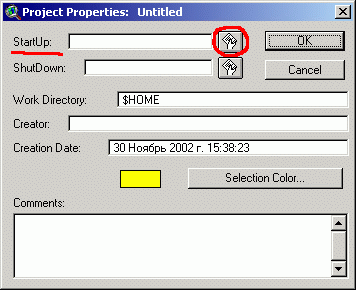

Как сделать так, чтобы новый проект открывался сразу с настроенной папкой
Тем, кто часто создает проекты Arcview, наверное, задается вопросом, как сделать так, чтобы рабочая папка (Working directory) по умолчанию была не c:\windows\temp или c:\gis\arcview3, то есть какая-то одна (заданная в лучшем случае переменной HOME, см. "Добавление пользовательских проекций к Arcview"), а, например, была равна той папке в которой содержатся данные для определенной операции или проекта. Это очень удобно, поскольку экономит временя на поиск нужной папки в дереве каталогов.
Самый простой способ сделать это, изменив в свойствах ярлыка вызывающего проект Arcview рабочую папку. Но этот способ недостаточно гибок и не очень удобен тем, кто держит не несколько настроенных проектов и только их использует, а постоянно создает проекты для временных операций с данными, при этом папки из которых загружаются данные могут быть самыми разными.
Как сделать так чтобы рабочая папка проекта всегда была равно той директории из которой загружается Arcview?
Достаточно просто, нужно добавить специальный скрипт (не забудьте его скомпилировать, иначе он не будет видем в списке доступных скриптов) и добавить две переменные окружения PATH и HOME (если это еще не сделано, также не забудьте перегрузить компьютер после их установки):
Скрипт должен иметь следующее содержание:
aproject = av.GetProject filen = FileName.GetCWD aProject.SetWorkDir(filen)
Если нужно, чтобы все время задавалась все время одна - определенная директория, то нужно модифицировать скрипт следующим образом, подставив вместо c:\temp - путь к нужной вам директории:
aproject = av.GetProject
filen = FileName.Make("c:\temp")
aProject.SetWorkDir(filen)
Далее по шагам:
Шаг 1. В проект по умолчанию (default.apr, если его не существует нужно его создать) добавить StartUp скрипт, то есть скрипт, исполняемый при загрузке проекта (Project\Properties\StartUp). Work directory должно иметь значение $HOME.

Шаг 2. Создать или изменить системную переменную Path, добавив
путь к папке Arcview.
Пример: PATH=C:\WINDOWS;C:\WINDOWS\COMAND;C:\GIS\ARCVIEW
Шаг 3. Добавить переменную HOME, если она еще не добавлена, о том как это сделать можно прочитать в заметке "Добавление пользовательских проекций к Arcview". Ее значение должно быть равно тому пути, который вы добавили к переменной PATH.
После этого, находясь в нужной папке с помощью Total Commander, Far или другого файлового менеджера, достаточно набрать в командной строке default.apr что б открыть проект в котором уже будет прописана рабочая папка, то есть та папка из которой вы запустили default.apr, эта же папка будет появляться первой при добавлении тем, что очень удобно.
Для еще более быстрого запуска Arcview из командной строки с установкой рабочей директории равной той, откуда он запущен, можно создать файл av.bat, в который добавить строку:
start /B default.apr
Файл av.bat нужно поместить в рабочую директорию Arcview по умолчанию (определенную переменной HOME). Тогда запускать настроенный проект будет еще проще, просто набрав av в командной строке файлового менеджера, если она у него есть, (например Total Commander).
Совет. Файлу default.apr, после установки скрипта лучше назначить атрибут "только для чтения".
Дата создания: 30.11.2002
Автор(ы): Максим Дубинин